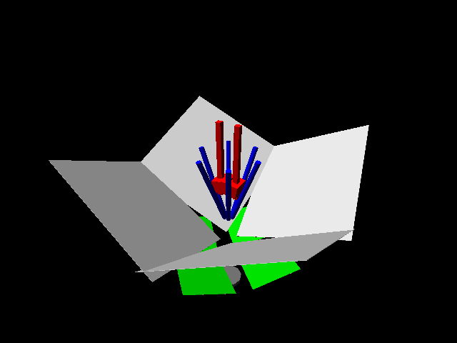
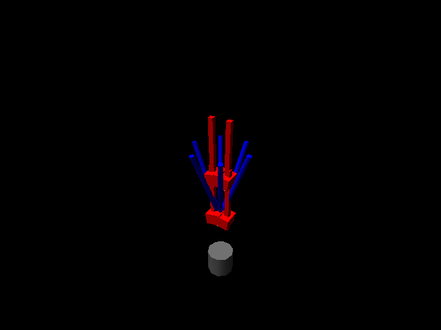
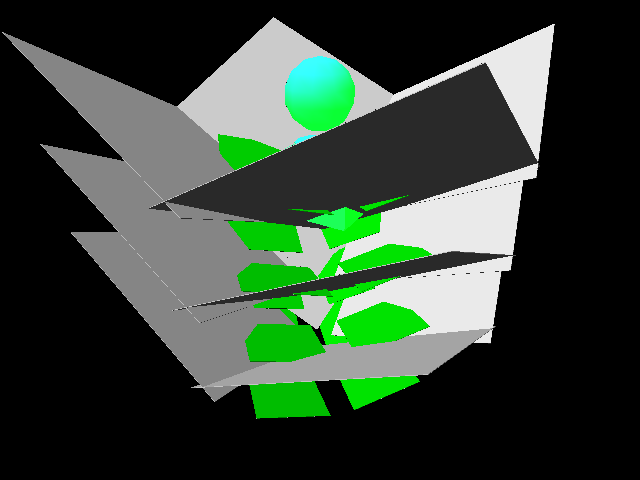
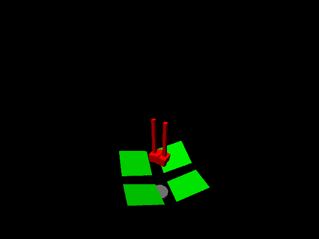
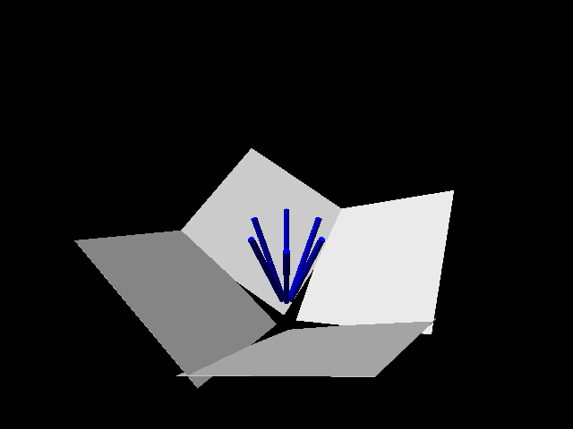
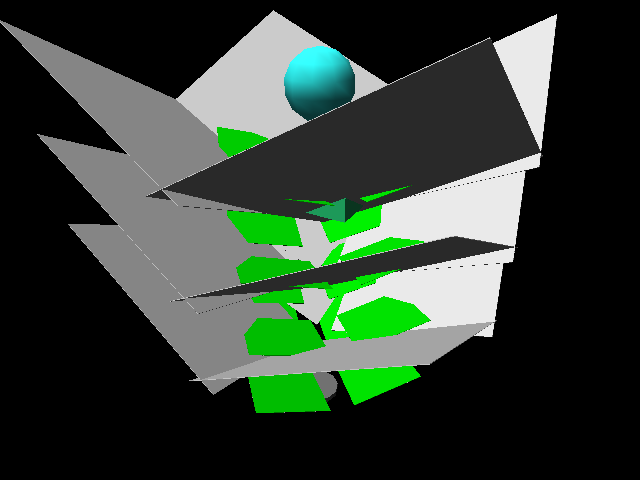
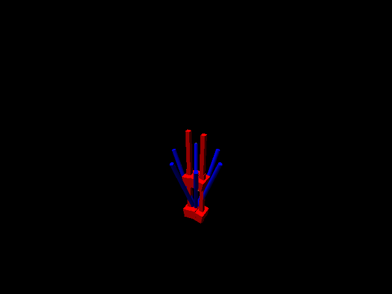

transsys is a formal language for modelling regulatory network systems conssisting of transcription factors and genes encoding them. It is developed by Jan T. Kim, initially at the Institute for Neuro- and Bioinformatics, and now at the School of Computing Sciences of the University of East Anglia.
This site is under constant development. As with biological systems, development may sometimes take place at some underlying levels of organisation ((the transsys software) without such changes being reflected by the phenotype (this website). However, major steps in development will be reflected here, too.
In other words: Please check this site regularly, and also have a
look at the software repository, because, in
a further biological analogy, development is influenced by interaction
with others and the environment, i.e. with you. Therefore, your
comments, suggestions and contributions are highly appreciated.
Please send them to info@transsys.net.
transsys and its applications is described in these papers:
Some additional technical information is found in the software archive.
The transsys software archive is here.
Here are some pictures from L-transsys, a Lindenmayer system enhanced with transsys:
| wild type flower | |
|---|---|
|  | |
| loss of A | gain of A |
|  |  |
| loss of B | gain of B |
|  |  |
| loss of C | gain of C |
|  |  |